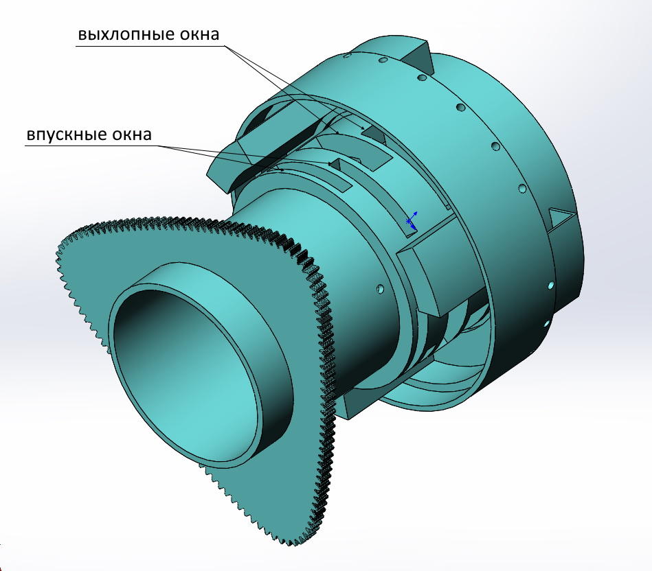
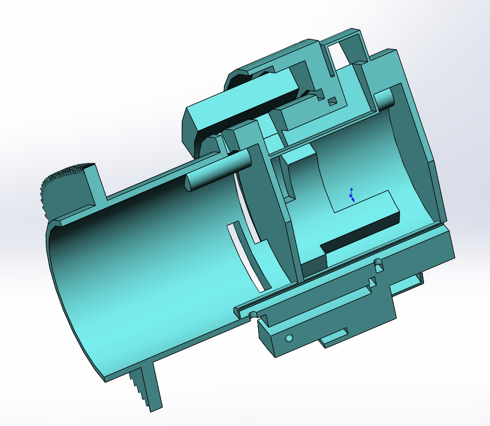
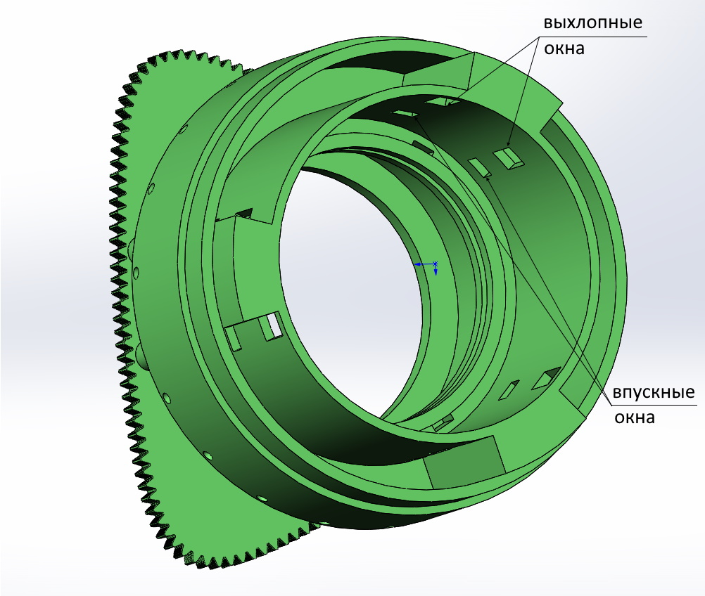
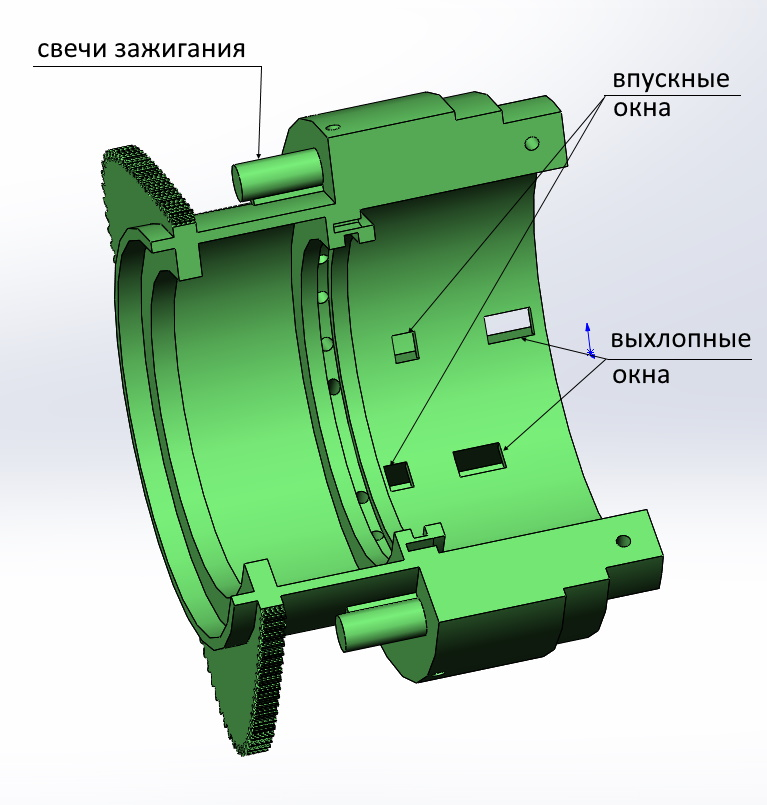
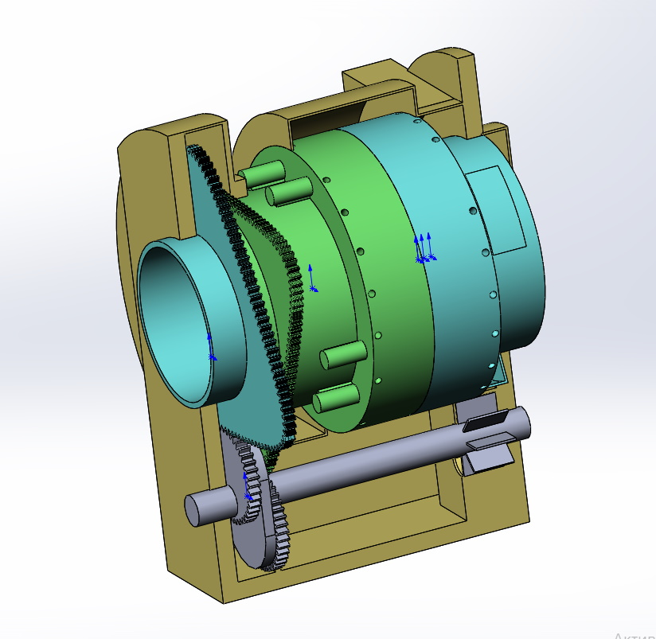
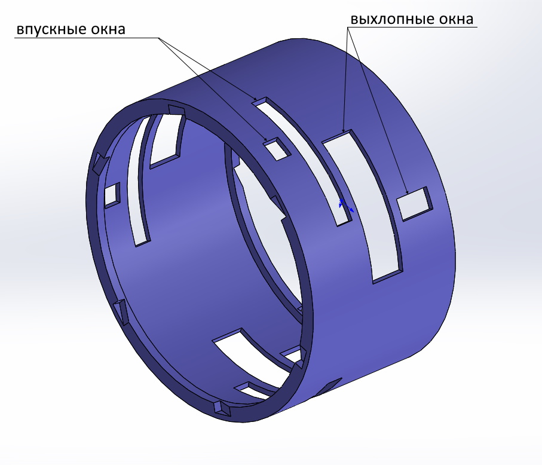
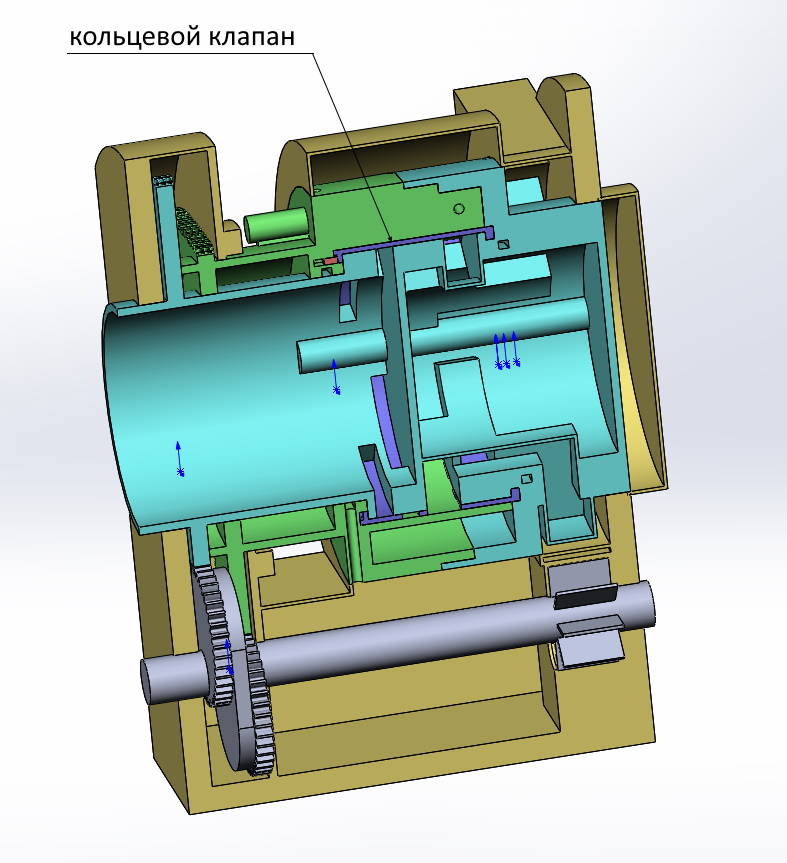

Цилиндры
Для создания камер двигателя применяются установленные соосно цилиндры (роторы) - внешний и внутренний. Цилиндры имеют полые валы. Лопасти установленные в цилиндрах одного цилиндра упираются торцами в стенки второго цилиндра. Внутри соединенных цилиндров образуются замкнутые камеры . Цилиндры соединяются с перекрытием ("в нахлест"). В целом компоновка такая же как у двухтактного двигателя.




Передача
Основой зубчатой передачи является зубчатый вал со смещенными шестернями (ЗКВ).

На полых валах цилиндров установлены зубчатые венцы. Форма эитх венцов может быть различной. В данном примере - венцы треугольные так как одни полный оборот цилиндр совершает за три оборота ЗКВ. Но они могут иметь любую n-угольную форму. Два цилиндра и ЗКВ устанавливаются в корпус. Цилиндры своими зубчатыми венцами входят в зацепление с валом (ЗКВ). В приведенном примере цилиндр совершающий малый ход проворачивается на 30 градусов, а совершающий большой ход на 90. Таким образом относительный ход лопастей (разница большого и малого хода цилиндров) составляет 60 градусов за один оборот ЗКВ и средние скорости лопастей совершающих малый и большой ход находится в соотношении 1:2. По части устройства механической передачи нет отличий от двухтакного варианта. В сборе представлено на картинке.

Газораспределение
Четырехтактный цикл осуществляется при помощи кольцевого клапана установленного между внутренним и внешним цилиндром.


Направленный выхлоп
Так как оба ротора вращаются в одном направление целесообразно направить выхлоп в противоположном направлении. Это позволяет использовать часть энергии выхлопа без применения дополнительных устройств (используя только статичные патрубки). Газ из горячих камер через выхолопные окна и выхлопной канал попадает на выхлопные патрубки направленные против вращения роторов. На выхлопных патрубках создается реактивная тяга и вхлоп тем самым совершает дополнительную работу.


Охлаждение и смазка
Оба ротора постоянно вращаются. Если выполнить в них каналы и подвести к ним жидкость через полые валы - то жидкость будет прокачиваться через детали роторов под действием центробежного ускорения (так же как в центробежном насосе). И для охлаждения и для смазки деталей можно использовать машинное масло. Ниже на картинках стрелками показано направление протока жидкости.


Каналы охлаждения возможно выполнить в боковых стенках камер.


В лопастях так же возможно сделать каналы охлаждения.


Жидкость проходя по каналам улавливается внешним кожухом и возвращается к гидронасосу подающему её снова в каналы внутреннего ротора (проходя при необходимости через радиатор и маслофильтр - не показаны на схемах). Происходит циркуляция охладителя. Таким образом все части двигателя возможно интенсивно охлаждать. Центробежное охлаждение позволяет поднять температуру в камерах сгорания. Кроме того, наличие каналов уменьшает сухой вес двигателя. Смазку возможно выполнить деалая дополнительные ответвления от охлаждающих каналов к трущимся поверхностям. Тут каналы смазки не показаны, что бы не усложнять описание. Из схем видно, что все контактирующие поверхности достижимы для смазки. На лопостях возможно выполнить внешние каналы (не описано в патенте). При соединении цилиндров канал лопасти одного цилиндра закрывается снаружи внутренней стенкой другого цилиндра. Образуются "трубки" (внешняя станка "трубки" - подвижная) по которым может течь жидкость омывая внутренние стенки обоих цилиндров. В отличие от двухтактного варианта в четырехтактном двигателе лопасти не пересекаются с какими либо окнами. Поэтому каналы лопастей не прерываются и есть возможнотсть омывать всю внутреннюю поверхность цилиндров. Это позволяет и смазывать и охлаждать поверхности цилиндров непосредственно соприкасающиеся с продуктами горения. При этом жидкость не будет забрасываться в камеры так как благодарая ценробежному ускорению будет сбрасываться через каналы во внешний кожух.


Зажигание
Для поджига грючей смеси на внешнем роторе установлены свечи зажигания. Запитать свечи можно как контактным, так и бесконтактным способом. В патенте подробно не рассматривается вопрос питания свечей. Тут представлен вариант бесконтактного питания (такой же как и для двухтактного двигателя).

На корпусе расположен кольцевой сердечник на который намотана катушка (стационарная). На внешнем валу так же расположен средечник с намотанной на него высоковольтной катушкой. Она вращается вместе с внешним валом. Для замыкания магниного потока установлен сердечник перемычка. По сути получается обычный трансформатор, передающий энергию на высоковольтную катушку без электрических контактов. Стрелками показано замыкание магнитного потока. Зазоры в магнитной системе возможно выполнить минимальными так как элементы магнитной системы не несут высокой механической нагрузки. Далее от высоковольтной катушки к свечам зажигания питание подется по проводу проложенному по ротору внешнего вала. Момент зажигания может определяться внешним блоком управления (не рассматривается тут).
Заключение
На первый взгляд двухроторная конструкция - это просто обычный двухтактный двигатель "свернутый в кольцо". Но особенности конструкции придают ему свойства не достижимые для поршневого варианта:
- - направленный выхлоп позволяет использовать часть энергии выхлопа для повышения полезной работы двигателя без дополнительных утройств
- - центробежное охлаждение позволяет интенсивно охлаждать все части двигателя включая лопасти (охлаждать поршни в обычном ДВС сложно). Это позволяет сжигать больше топлива в единицу времени (что то калорийнее бензина, горючие смеси с большей температурой горения). Т.е. позволяет повышать мощьность и "оборотистость" двигателя.
- - все части можно хорошо смазывать. Нет необходимости добавлять масло в бензин (как это сейчас делается для двухтактных ДВС). Сгорание будет чище.
- - большинство контактов деталей - концентрические. При подведении смазки они будут работать как подшипники скольжения имея минимальные потери на трение.
- - Все усилия и колебания возникающие при ускорениях роторов "замкнуты" по кругу. Это снижает вибрации позволяя делать высокооборотистые двигатели.